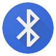

Web Bluetooth Demo
This webapp demonstrates the Web bluetooth
Follow these steps to use the demo:
- :
- Trigger a request:
- Check the verbose box if you want debug output.
- The default advertising filter is 'TYSC-'. Enter a full BLE friendly name if you want to restrict the filtering to a single BLE Device.
- Click on the Execute button.
A BLE connection will be established to the BLE peripheral device and the response will be show in the verbose window.
The BLE connection will be dropped after the response is received.
- Repeat.
Command/Response Output